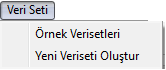

Veri Seti Menüsü
Veri Seti Menüsü:
Bu menünün altında bulunan altmenülerde PIVA'nın içinde öntanımlı olarak yüklü gelen bir çok veri
setini bulabilirsiniz.

Örnek Verisetleri: Bu altmenüyle, PIVA'yı test etmek, makine öğrenmesi algoritmalarını,
önişleme, grafiksel işlemler, istatistiksel dağılımlar, istatistiksel testleri yapmak için kullanılabilecek bir çok örnek
verisetine buradan ulaşabilirsiniz.